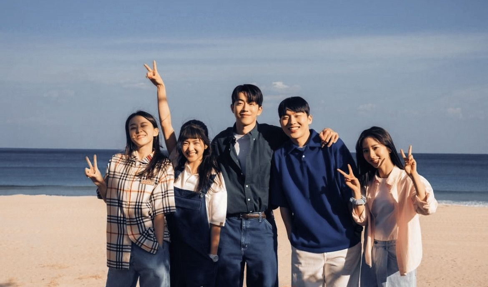

05 · Fuera del código
Mis Hobbies

K-pop & Doramas
El k-pop es mi forma de conectar con otra cultura y desconectarme del estrés. Me encanta seguir a mis artistas favoritos y descubrir nueva música cada semana.

Programación
Más allá de la escuela, me gusta explorar proyectos propios: scripts, diseño web y aprender tecnologías nuevas por pura curiosidad.
Dormir & Comer
Ver doramas me abrió las puertas al idioma coreano, la gastronomía y las costumbres de Corea del Sur. Un mundo que me fascina 🌸